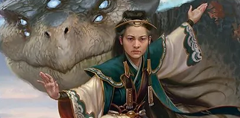

Jeksai Striker Precon Deck List

Commander
Creatures
- Archmage Emeritus
- Baral and Kari Zev
- Caldera Pyremaw
- Elsha, Threefold Master
- Goblin Electromancer
- Guttersnipe
- Haughty Djinn
- Lier, Disciple of the Drowned
- Manaform Hellkite
- Mangara, the Diplomat
- Monastery Mentor
- Storm-Kiln Artist
- Third Path Iconoclast
- Transcendent Dragon
- Velomachus Lorehold
- Veyran, Voice of Duality
- Voracious Bibliophile
- Young Pyromancer
Sorceries
- Ancestral Vision
- Baral's Expertise
- Compulsive Research
- Curse of the Swine
- Deep Analysis
- Dismantling Wave
- Expressive Iteration
- Mana Geyser
- Ponder
- Preordain
- Rite of Replication
- Time Wipe
- Vanquish the Horde
- Will of the Jeskai
Instants
- Abrade
- Big Score
- Consider
- Electrodominance
- Expansion // Explosion
- Frantic Search
- Magma Opus
- Narset's Reversal
- Opt
- Pongify
- Prismari Command
- Sublime Epiphany
- Swords to Plowshares
- Think Twice
- Transforming Flourish
Artifacts
- Adaptive Training Post
- Arcane Signet
- Azorius Signet
- Boros Signet
- Fellwar Stone
- Izzet Signet
- Sol Ring
- Talisman of Progress
Enchantments
- Aligned Heart
- Curse of Opulence
- Ghostly Prison
- Shiny Impetus
- Tempest Technique
- Whirlwind of Thought
Lands
- Adarkar Wastes
- Ash Barrens
- Battlefield Forge
- Cascade Bluffs
- Clifftop Retreat
- Command Tower
- Evolving Wilds
- Exotic Orchard
- Ferrous Lake
- Glacial Fortress
- Irrigated Farmland
- Island - 5
- Mountain - 5
- Mystic Monastery
- Path of Ancestry
- Perilous Landscape
- Plains - 4
- Prairie Stream
- Reliquary Tower
- Rugged Prairie
- Shivan Reef
- Skycloud Expanse
- Sulfur Falls
- Temple of Enlightenment
- Temple of Epiphany
- Temple of Triumph